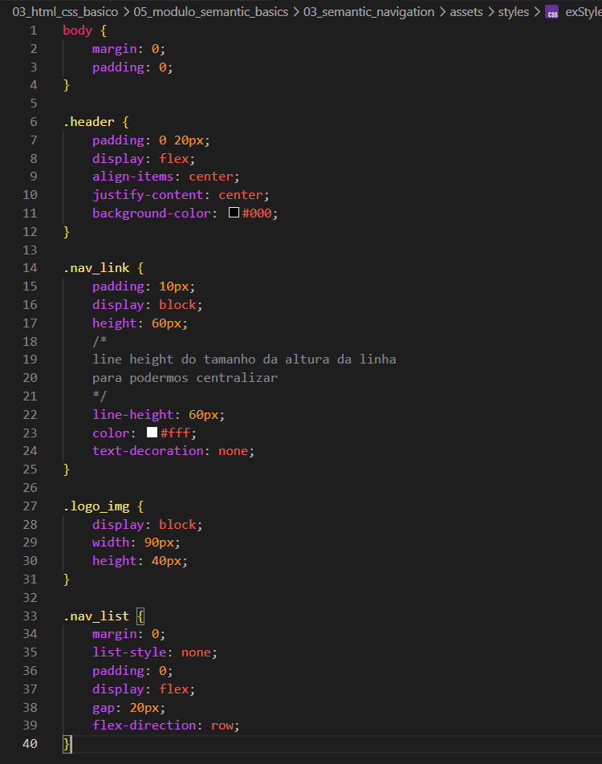

Semantic Navigation
Intro
Anteriormente vimos como adicionar uma imagem a nosso cabecalho e fazer alinhamento. Agora iremos ver um problema relacionado a acessibiliade.
Anteriormente vimos como adicionar uma imagem a nosso cabecalho e fazer alinhamento. Agora iremos ver um problema relacionado a acessibiliade.
Como cada um de nossos links do menu foram mapeados como links em nossa class. Quando um leitor de tela o identificasse, leria apenas as frases na_link, ja que usamos ela como padrao para todos os links do menu.
Nao seria possivel idenfifica-lo durante a leitura, para melhorarmos essa acessibildiade temos como usar um artificio colocando por exemplo uma lista numerada.
Para isso usaremos novamente um atalho para agilizar nossa criacao da estrutura: ul.nav_list>li.nav_item*4
Apos feito isso e configurado nosso novo elemento o nav_list com display: flex; e flex-direction:row; (usamos para deitar a lista).
Iremos ter que configurar melhorar nosso link pois precisariamos apertar certinho para poder abrir o link desejado. Para podermos aumentar o espaco de click do link para isso usamos o gap uma propriedade do flex e grid.
O gap no flexbox é utilizado para definir o espaçamento entre os elementos filhos de um container com display: flex. Diferente de usar margin, o gap aplica esse espaçamento de forma automática e consistente, sem afetar as bordas externas do container. Ele funciona tanto na horizontal quanto na vertical, dependendo da direção do
